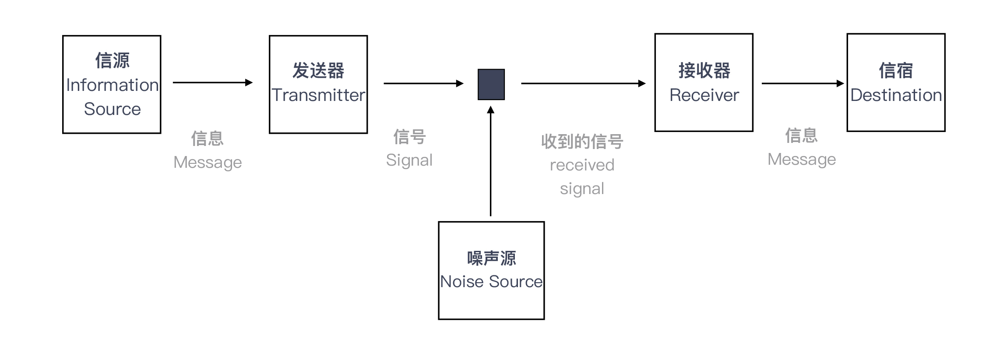

- 00 开篇词 程序员解决的问题，大多不是程序问题.md.html
- 01 10x程序员是如何思考的？.md.html
- 02 以终为始：如何让你的努力不白费？.md.html
- 03 DoD的价值：你完成了工作，为什么他们还不满意？.md.html
- 04 接到需求任务，你要先做哪件事？.md.html
- 05 持续集成：集成本身就是写代码的一个环节.md.html
- 06 精益创业：产品经理不靠谱，你该怎么办？.md.html
- 07 解决了很多技术问题，为什么你依然在“坑”里？.md.html
- 08 为什么说做事之前要先进行推演？.md.html
- 09 你的工作可以用数字衡量吗？.md.html
- 10 迭代0_ 启动开发之前，你应该准备什么？.md.html
- 11 向埃隆·马斯克学习任务分解.md.html
- 12 测试也是程序员的事吗？.md.html
- 13 先写测试，就是测试驱动开发吗？.md.html
- 14 大师级程序员的工作秘笈.md.html
- 15 一起练习：手把手带你分解任务.md.html
- 16 为什么你的测试不够好？.md.html
- 17 程序员也可以“砍”需求吗？.md.html
- 18 需求管理：太多人给你安排任务，怎么办？.md.html
- 19 如何用最小的代价做产品？.md.html
- 20 为什么世界和你的理解不一样？.md.html
- 21 你的代码为谁而写？.md.html
- 22 轻量级沟通：你总是在开会吗？.md.html
- 23 可视化：一种更为直观的沟通方式.md.html
- 24 快速反馈：为什么你们公司总是做不好持续集成？.md.html
- 25 开发中的问题一再出现，应该怎么办？.md.html
- 26 作为程序员，你也应该聆听用户声音.md.html
- 27 尽早暴露问题： 为什么被指责的总是你？.md.html
- 28 结构化：写文档也是一种学习方式.md.html
- 29 “懒惰”应该是所有程序员的骄傲.md.html
- 30 一个好的项目自动化应该是什么样子的？.md.html
- 31 程序员怎么学习运维知识？.md.html
- 32 持续交付：有持续集成就够了吗？.md.html
- 33 如何做好验收测试？.md.html
- 34 你的代码是怎么变混乱的？.md.html
- 35 总是在说MVC分层架构，但你真的理解分层吗？.md.html
- 36 为什么总有人觉得5万块钱可以做一个淘宝？.md.html
- 37 先做好DDD再谈微服务吧，那只是一种部署形式.md.html
- 38 新入职一家公司，怎么快速进入工作状态？.md.html
- 39 面对遗留系统，你应该这样做.md.html
- 40 我们应该如何保持竞争力？.md.html
- 划重点 “综合运用”主题内容的全盘回顾.md.html
- 划重点 “自动化”主题的重点内容回顾汇总.md.html
- 划重点 一次关于“沟通反馈”主题内容的复盘.md.html
- 划重点 关于“以终为始”，你要记住的9句话.md.html
- 划重点 关于“任务分解”，你要重点掌握哪些事？.md.html
- 加餐 你真的了解重构吗？.md.html
- 总复习 重新审视“最佳实践”.md.html
- 总复习 重新来“看书”.md.html
- 答疑解惑 如何分解一个你不了解的技术任务？.md.html
- 答疑解惑 如何在实际工作中推行新观念？.md.html
- 答疑解惑 如何管理你的上级？.md.html
- 答疑解惑 持续集成、持续交付，然后呢？.md.html
- 答疑解惑 持续集成，一条贯穿诸多实践的主线.md.html
- 结束语 少做事，才能更有效地工作.md.html
- 捐赠
20 为什么世界和你的理解不一样？
你好，我是郑晔。
从今天起，我们要开启一个新的模块：沟通反馈。
如果看到沟通反馈几个字，你就以为我打算在这里教一些谈话技巧，那你还真的想错了。
在这个模块里，我打算与你讨论的主题是，生活在真实世界中。沟通反馈和生活在真实世界这两个话题是怎么联系到一起的呢？请听我慢慢道来。
《大富翁》里的沙隆巴斯有句口头禅：人生不如意的事，十有八九！但是不知道你有没有想过这样的一个问题，为什么人生如此不如意？如果这是一篇鸡汤文，我应该告诉你世事艰辛。但我要说的是，真实的原因往往是因为你想得太美好，用我们做软件的例子来看一下：
- 在我们的愿望中，做出来的产品应该一举成名，现实却是惨淡经营；
- 在我们的愿望中，产品经理给出的需求应该是清晰明了的，现实却是模模糊糊；
- 在我们的愿望中，写出来的代码，应该是快捷无错的，维护也很容易，现实却是 Bug 百出，越修改，修改的时间就越长；
- 在我们的愿望中，你给我布置任务，我应该迅速地理解到关键，现实却是做出来的与你的目标根本就是天差地别；
- ……
为什么会这样？欢迎来到真实世界，真实世界不是以美好愿望驱动的，它有着自己的运行规律。虽然我们都生活在同一个世界中，但每个人理解世界的方式确实是千差万别。
我们努力地学习各种知识，为的就是更好地理解这个世界的运作方式，而沟通反馈，就是我们与真实世界互动的最好方式。
你也许会好奇，为什么我们对世界的理解会出现偏差？接下来，让我们一起用一个信息论的视角看一下。
一个信息论视角的解释
1948年，克劳德·香农（Claude Elwood Shannon）在《贝尔系统技术学报》（Bell System Technical Journal）上发表了一篇论文《通信的数学原理》（A Mathematical Theory of Communication），这是现代信息论的开端。我们程序员熟知的通信、数据压缩、密码学、自然语言处理等诸多领域都有信息论的身影。
我们这里要借鉴的是香农信息论中的一个通信模型，如下图所示：

这个图中包含了几个要素：
- 信源（Information Source），它负责产生信息（Message）。
- 发送器（Transmitter），它会对信息进行某些操作，也就是对信息编码，产生信号（Signal）。
- 信道（Channel），它是信号传送的媒介。
- 接收器（Receiver），它是对信号执行发送器的逆操作，解码信号，提取出信息。
- 信宿（Destination），它负责接收信息。
当然，图中还有一个因素叫做噪声（Noise），指的是削弱信号的东西。不过，它并不是我们这里讨论的重点，我们暂时忽略它。
我们用一个实际工作中的例子来理解一下这个过程。假设你的项目经理来给你布置一项工作，在这里，项目经理就是一个信源。他的想法就是他的消息，他要把这件事告诉你，先要在大脑中做一次编码，转换成语言表达出来。他说出来的这段话就是信号。
比如，这个信号是“完成一个需求”。这段话通过信道，也就是空气传播到你耳朵里，接收到这段话之后，你会按照自己对这段话的理解进行解码，作为信宿的你，形成了自己的想法，这就是你接到的消息，整个过程就完成了。
我们来看一下，理解偏差是怎么产生的。
项目经理给你传输的信号是“完成一个需求”，在项目经理脑子中，这个信号的原始信息可能是这样的：编写完成这个功能所需的代码，然后为这段代码写好自动化测试，再将它与现有系统集成好，通过测试人员的验证。
而在学习这个专栏之前，你从“完成一个需求”这个信号中解码出来的信息却是：把功能代码写完。这样，问题就出现了。即便这里忽略了噪声的干扰，当编码和解码不是一个版本的时候，无论如何，项目经理的信息都很难准确地传达到你这里。
这就是人们往往对世界产生误解的原因。
信息的传达要经过编码和解码两个过程，无论是编码出现问题，还是解码出现问题，都会造成信息的不准确。
一方面，有些人表达不清楚，一件简单的事，他说了半天，你依然是云里雾里。这就相当于，信源发出的信息经过编码得到的信号已经不准确了。
另一方面，就像听一些技术演讲，人家说得很清楚，但因为自己没有相关背景，依然无法得知人家表达的信息。这就相当于信号虽然准确，但我们没有对应的解码装置，信号无法转成有效信息。
再有就是像前面这个例子，收发双方编解码器不配套，同样的信号得到的信息截然不同，信息传达的目的也不能很好地完成。
有了理论做基础，我们就容易理解世界为什么总和我的理解不一样，这就是编解码的过程出了问题。因为每个人经历见识的差异，造成了各自编解码器的差异。世界是同一个世界，每个人看到的却是千姿百态。
如果想在这个真实的世界中生活得更幸福一些，我们能做点什么呢？那就是改善我们的编解码器。怎么改善自己的编解码器呢？这就是“沟通反馈”这个模块要讨论的内容。
改善编解码
站在改善编解码效果的角度，我们要考虑哪些问题呢？
首先，我们要考虑一下编码器的效果。换句话说，当我们想把信息传达给别人的时候，我们得把信息编码成一个有效的信号，至少要保证在我们这里信息不丢失。
我举个例子，有一次，我在客户现场做咨询，客户的一个程序员给我介绍他们的系统，他讲了二十分钟，我还是听得一头雾水。于是，我打断他，花了五分钟用我的语言给他讲了一遍，然后问他：“你想说的是不是这个意思？”他猛劲点头：“就是这样的。”
为什么会这样呢？究其原因就是，他上来就在给我讲实现细节，完全没有任何铺垫。
要知道，我是来了解情况的，所以，我的背景知识肯定是不足的，凭空理解这些细节是非常困难的一件事。从沟通的角度上看，这么做浪费了大量的时间，因为在过程中，我要不断地让他给我补充这些缺失的背景。这几乎是很多程序员讲东西的通病：讲东西直奔细节。
我在面试中也经常遇到过类似的情况，一些候选人上来就给我讲技术细节，我对他做过的系统一无所知，所以，我只好打断他，让他先把背景给我介绍一下。
同样，很多人抱怨别人不能理解自己，其实，首先应该想的问题是，自己到底有没有把话说清楚。这就是编码器出现问题的情况。
其次，我们还要考虑一下解码器的效果，也就是说，当一个信号呈现在我们面前时，作为接收者，我们是否能够有效地解码信息。
著名作家王小波曾经讲过一个花剌子模信使的故事，说的是中亚古国花剌子模有一个奇怪的风俗，凡是给君王带来好消息的信使，就会得到提升，给君王带来坏消息的人则会被送去喂老虎。如此一来，谁还敢把坏消息带给君王呢？但问题是，君王不听坏消息，坏消息就不存在了吗？
这就相当于解码器出了问题，过滤掉了很多真实的信息。但真实世界就是真实世界，它不会按照人们的美好愿望运行。
再举一个我们身边的例子，能做程序员的人，大多是很聪明的人， 当几个人一起讨论问题时，别人往往刚开了个头，他就认为自己已经理解了别人的想法，然后开始表达自己的观点。信息都不全，何谈解码。所以，开发团队的讨论中常常出现一个人高谈阔论，却离题万里的情况。
我们要想让自己更好地工作生活，就必须接纳真实世界的反馈，而接纳真实世界的反馈，一是需要我们打开自己的接收器，把信号接纳进来，让反馈进来，这是解码的前提；二是扩展见识，提升自己解码器的效果，更好地理解别人要表达的内容到底是什么。
说了编码器和解码器可能出现的问题，我们再来看另外一个可能造成影响的问题：编解码器算法，也就是怎么协调沟通双方更有效地进行沟通。
既然前面已经说了算法不够好会影响到信息的传递，那接下来的问题就是怎样找到一个好的算法。其实，我们从始至终在讲的各种最佳实践就是一个个好的算法，帮助我们改善沟通的效果。
还是回到前面提到“完成一个需求”的例子，我们在“以终为始”模块已经讲过了，通过制定“完成的定义”就可以帮助改善这个过程。这就相当于，沟通的双方都有了一个编解码手册。
当“完成一个需求”这样的信号发出时，作为接收方，你的解码动作就变成了，先要查一下手册里，关于“完成一个需求”的标准动作都有哪些。于是，你就不会对事情做那么简单的估计了。
在“沟通反馈”这个模块下，我还会给你介绍各种“算法”，也就是最佳实践，帮你在工作中提高“信息”传递的效率。
回到我们这部分主题上，沟通反馈就是改善编码、解码以及算法的方式。无论是“发送”得更清楚，还是“接收”得更明白，抑或是通过各种协调算法，都是为了让通信的双方做好准备。
总结时刻
人生不如意之事，十有八九，之所以很多人有如此多的不如意，很大原因在于我们对真实世界有着很多不切实际的幻想，美好的愿望并不能驱动这个世界，在软件开发中也是如此。虽然人和人生活在一个世界中，但对世界的理解却是千差万别的。
我们借用了信息论的一个通信模型解释为什么每个人看到的世界会有如此大的差异，其核心就在于，人和人拥有不同的编解码器。想要在这个真实世界中生活得更幸福一些，需要我们不断地改善自己的编解码器。
改善编解码，需要从几个角度着手，分别是：编码器，让信息能输出更准确；解码器，减少信号过滤，改善解码能力；还有编解码算法，也就是各种来自行业的“最佳实践”，协调沟通的双方。
如果今天的内容你只能记住一件事，那请记住：通过沟通反馈，不断升级自己的编解码能力。
最后，我想请你回想一下，你在工作中遇到过哪些因为沟通反馈不畅造成的问题呢？欢迎在留言区写下你的想法。
感谢阅读，如果你觉得这篇文章对你有帮助的话，也欢迎把它分享给你的朋友。
© 2019 - 2023 Liangliang Lee. Powered by gin and hexo-theme-book.